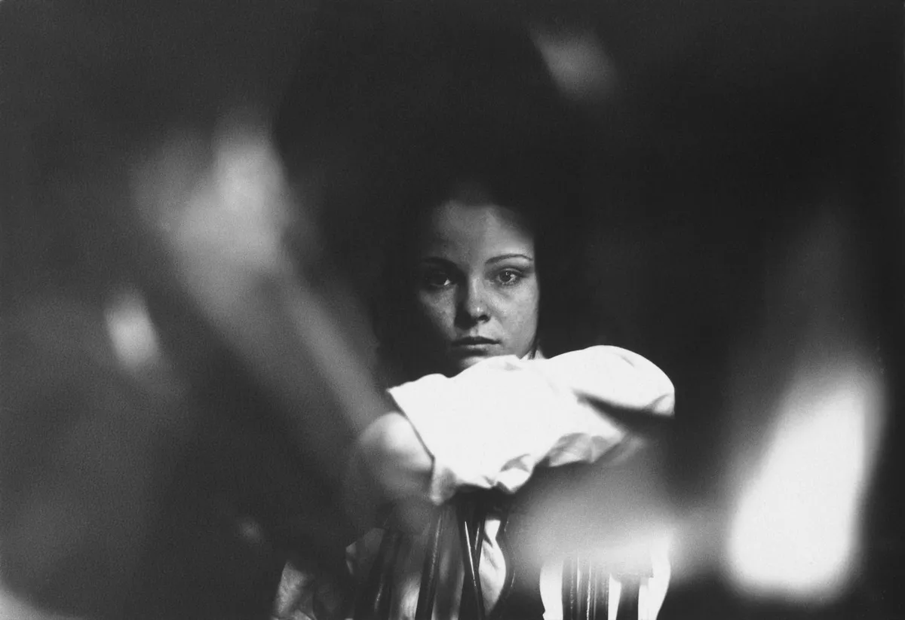
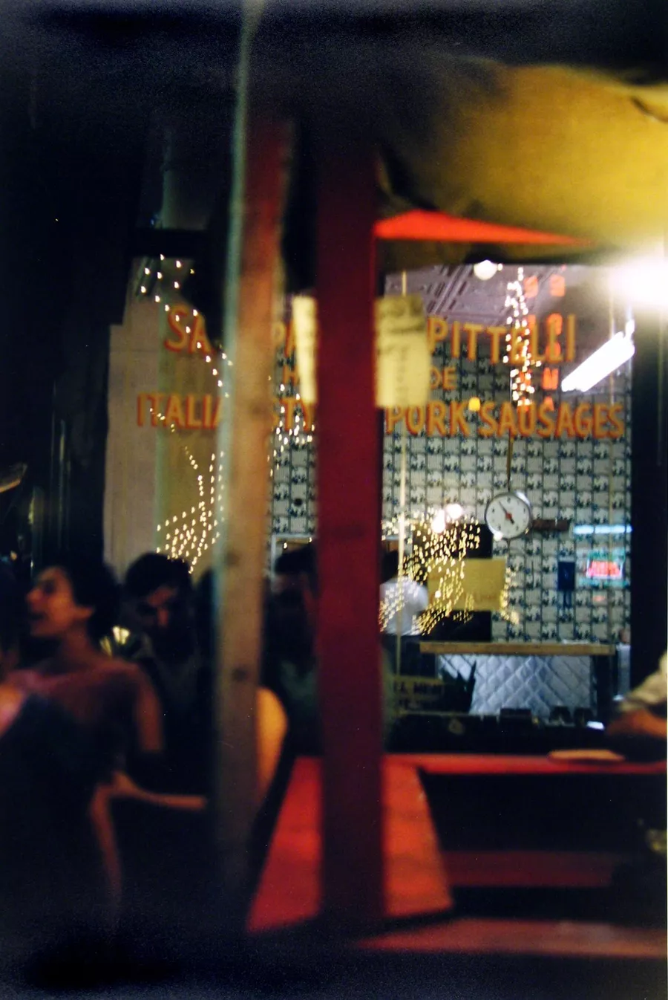
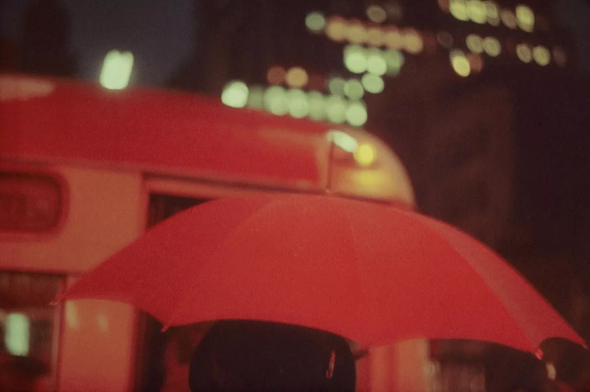

Saul Leiter, from “In My Room.”
When exploring the work of Saul Leiter and learning about his thoughts on photography, an aspect that shines through is that this
was the work of a man who enjoyed photography for photography’s sake. You can feel it in his work, a calm enjoyment for the hidden beauty in the world.
This is simultaneously inspiring and relaxing. Looking through his work, cutting out all the distractions, you can feel the medium at its purest.
Photography seemed to be an escape for Leiter. Born in Pittsburgh in 1923, his father was a well-known rabbi and Talmudic scholar,
and Leiter was encouraged to become a rabbi as well. He left theology school and at 23 moved to New York to pursue painting.
Leiter was introduced to photography by the Expressionist painter, Richard Pousette-Dart, and while he began in black and white,
in the 1950s he started to experiment with color photography
at the time when the medium was in its early stages. With no formal training, he began exploring the streets of New York.
“I may be old-fashioned. But I believe there is such a thing
as a search for beauty – a delight in the nice things in the world. And I don’t think one should have to apologize for it.”
Leiter’s work was noticed by Edward Steichen, who included him in two MoMA shows in the 1950s. However, after that, Leiter’s work faded from view. While he became a successful fashion photographer, he continued to explore the streets of New York,
printing some of his black and white photographs, but putting his color slides into boxes.
While he worked with a variety of lenses, Leiter was well known for often using a telephoto perspective,
and particularly a 150mm lens. This is not a focal length that many street photographers use, but he used it to create a compressed view that made his work feel painterly.
Leiter used many other strategies to enhance painterly look and feel, including shooting in
the rain and snow, photographing through windows, including reflections, and combining many elements at different depths, often
bringing out strong colors in out-of-focus foreground elements. Leiter even purchased expired color film, which would allow for surprise color shifts.

Saul Leiter, San Genaro

Saul Leiter, Red Umbrella, 1951, from “Early Color.”